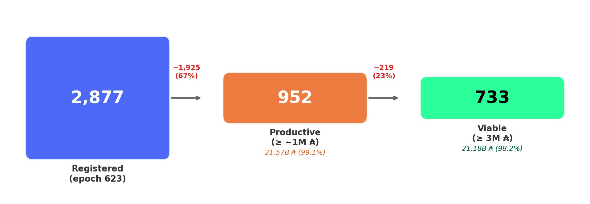
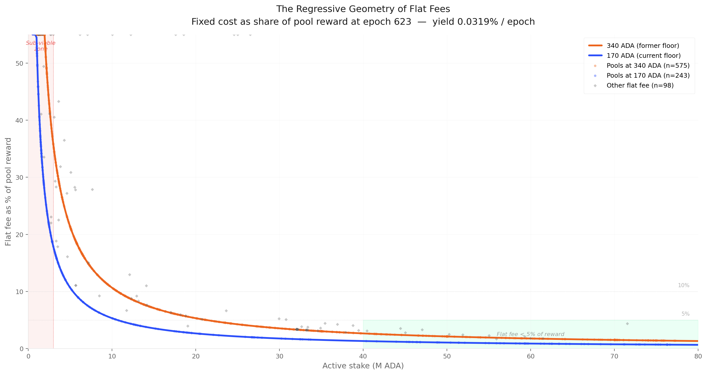
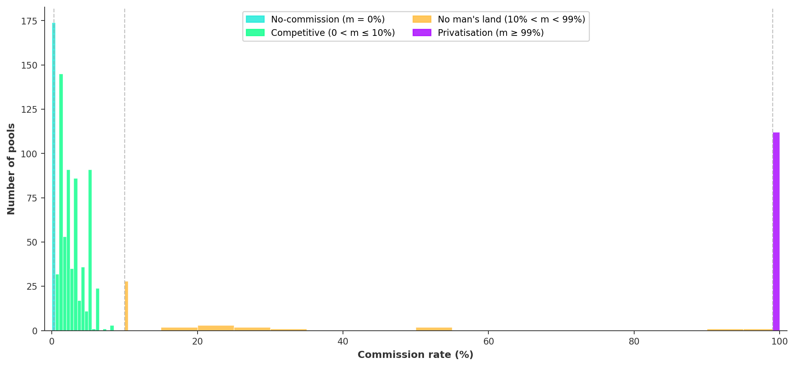
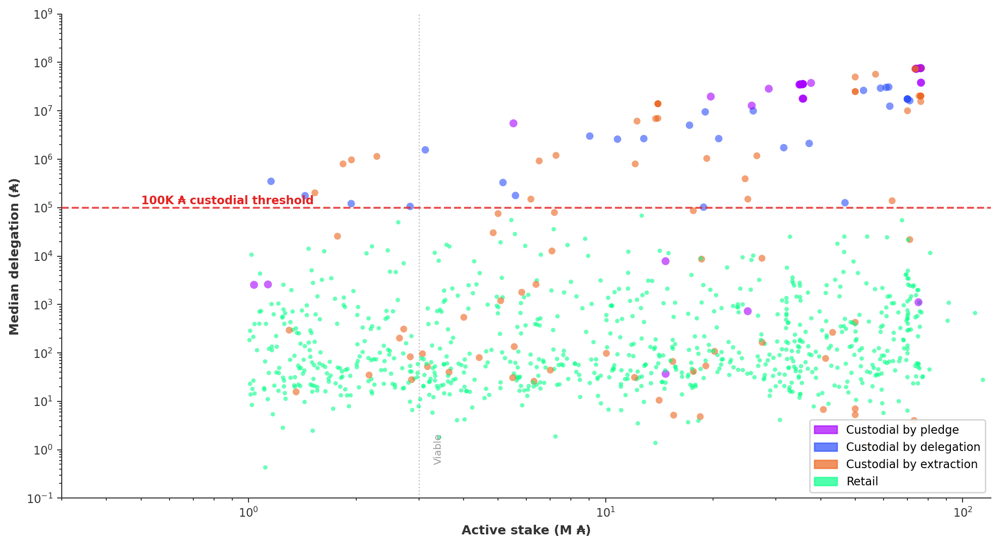
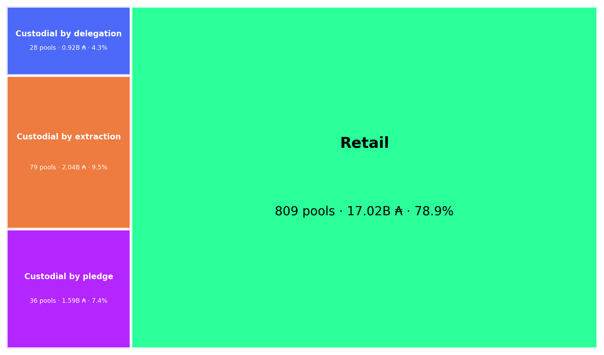
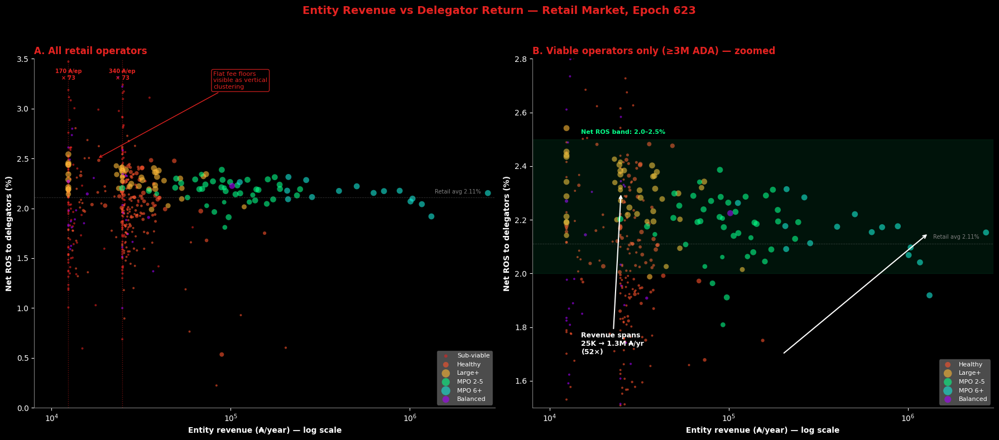
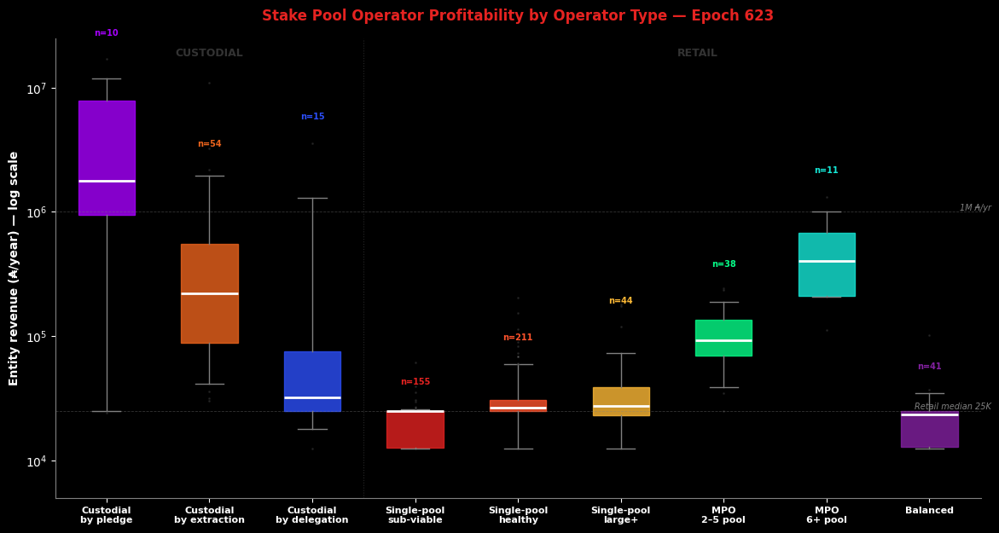
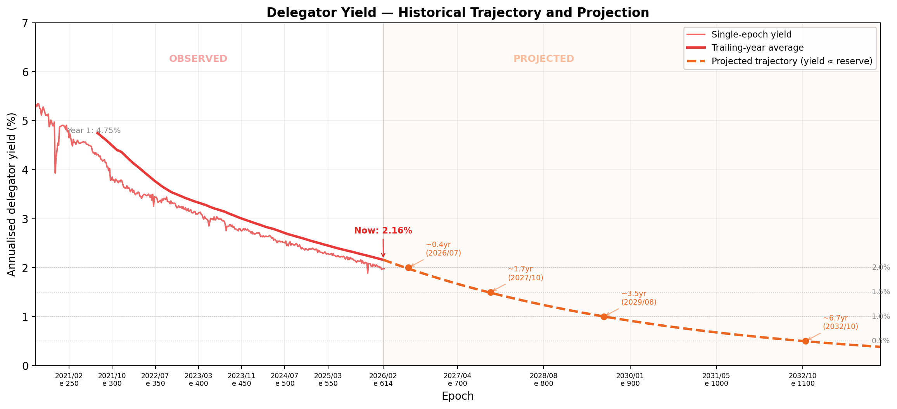
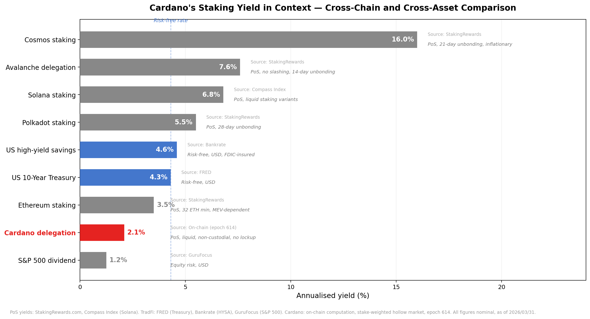

(Built on 2026/04/14 from mainnet data at epoch 623 plus historical analysis from epoch 211 (413 epochs).)
This report analyses the intra-pool reward split — the third and final stage of Cardano's reward pipeline — and traces the structural forces that determine how much of each pool's reward reaches delegators versus operators.
Every epoch, once the reward curve assigns a total reward to each pool, a second mechanism activates: the intra-pool split. The pool operator extracts a flat fee (a fixed ₳ amount) and a commission (a proportional share); the remainder is distributed pro-rata among all delegators (including the operator's own stake).
Together the flat fee and commission compose the operator's pricing plan; their sum — the effective price — is the fraction of pool reward that never reaches delegators. At epoch 623, 952 productive pools process 21.57B ADA of staked capital. After filtering the 21% of stake that is custodial (where the operator controls delegation addresses), the retail market consists of 809 pools, 516 entities, 17.02B ADA, and 1,272,836 delegators — with a median delegation of 87 ₳.
The central finding is a double asymmetry.
Delegators in sub-viable pools pay 48.3% effective price for 2.04% net return; delegators in near-saturation pools pay 2.7% for 2.34% — 18× the price for 0.30 percentage points of return. On the operator side, the sub-viable operator absorbs 48.3% of pool rewards but earns 24,820 ₳/yr; an 11+ pool MPO absorbs 7.7% but earns 1,035,496 ₳/yr — 42× more revenue at 6× less price.
The flat fee — a mechanism unique to Cardano — penalises small-pool delegators without compensating small-pool operators, and the return signal it produces is too narrow to drive delegation decisions.
This challenges the incentive mechanism's core assumption: that delegators can differentiate pools by return.
The argument proceeds in four parts:
The formula (§2). The SL-D1 intra-pool reward-sharing specification — from the original design through a residual-split decomposition to a reader-friendly rewrite and mainnet parameterisation. The mechanism is sequential: flat fee first, commission on the remainder, then pro-rata distribution.
The productive and viable populations (§3). The scope and epoch: 952 productive pools (≥ 1M ADA) carrying 99.1% of stake and 95.6% of delegations. The operator and delegator sides of the population, from raw certificates to the viable threshold.
The pricing plan landscape (§4). The flat fee, the commission, the custodial/retail boundary (using per-pool median delegation from db-sync), and the retail effective price. The operator's profitability versus the delegator's return.
The delegator yield (§5). The yield trajectory (5.3% → 2.0% in 5.5 years), cross-chain and cross-asset comparison, and the structural compression that makes the yield spread too narrow to drive delegation decisions — and will make it narrower still as the reserve depletes.
All counts and amounts use epoch 623. Source data: pool_choice_quality_623.csv, pool_median_delegation_623.csv (db-sync epoch_stake), reward_split_snapshot_623.csv (synthetic, estimated from epoch 614 reward rate), koios_pool_history_mainnet.csv, mpo_entity_pool_mapping_mainnet.csv.
Table of Contents
1. Mainnet Observations
Terminology note. The protocol uses "fixed cost" and "margin" for the two extraction channels. This report adopts pricing-plan terminology: the fixed cost is the flat fee (a fixed ₳/epoch amount), the margin is the commission (a proportional share), and their sum — the operator take — is the effective price the delegator faces. The on-chain parameter names appear in §2 (the formula) and at first use in §4. Everywhere else, the pricing-plan terms apply.
OPE.O1
The flat fee dominates operator revenue but operators do not actively set it
5 findings
The flat fee delivers 60% of retail operator revenue yet behaves as a frozen governance artefact — 89.5% of pools pick one of two floor values, and 64% still declare the pre-halving 340 ₳ floor 178 epochs after governance halved it to 170 ₳. The channel that dominates revenue is the one operators touch the least.
OPE.O1.F1
The flat fee accounts for 60% of all operator revenue in the retail market; the commission accounts for 40%
§2.3Structural — the passive channel dominates the active one
OPE.O1.F2
64% of pools still declare the former floor (340 ₳) — 178 epochs after a governance action halved it to 170 ₳
§1Governance inertia — driven by the largest entities
OPE.O1.F3
89.5% of pools declare one of two floor values (170 or 340 ₳); "custom" values are mostly near-floor inertia (Binance 345, Everstake 400) or extraction
§1The flat fee is a binary choice, not a pricing parameter
OPE.O1.F4
The flat fee follows a $1/\sigma$ hyperbola: 47.5% of pool reward at the sub-viable tier, 1.5% at near-saturation
§1Regressive by design — a fixed-in-₳ levy on a size-proportional reward
OPE.O1.F5
No other major PoS protocol uses a flat fee. The fixed-cost model is unique to Cardano; Ethereum, Solana, Cosmos, and Polkadot all price validators on proportional rules
§1Unique to Cardano — no cross-chain precedent or comparator
OPE.O2
The commission market is bimodal with an empty middle
2 findings
Commissions cluster at two extremes — a competitive band ≤ 10% holding 87% of pools and a privatisation band ≥ 99% holding 12% — with only 12 pools priced in the 89pp interval between them.
OPE.O2.F1
87% of pools set a commission at or below 10%; 12% set ≥ 99% (privatisation). The 89pp range between 10% and 99% contains 12 pools
§2.1No man's land — no economic attractor exists between pricing and extraction
OPE.O2.F2
Four bands: no-commission (170 pools, 17.9%), competitive (658, 69.1%), no man's land (12, 1.3%), privatisation (112, 11.8%)
21% of productive stake is custodial — three mechanisms, three economics
3 findings
21.1% of productive stake is custodial across three on-chain-detectable mechanisms (pledge, extraction, median-delegation), each producing a distinct economic outcome — from 29,329 ₳/yr median revenue per entity for custodial-by-delegation to 1,759,252 ₳/yr for custodial-by-pledge.
OPE.O3.F1
79 entities operating 143 pools (4.55B, 21.1%) are custodial: by pledge (10 entities, 36 pools, 1.59B), by extraction (57 entities, 79 pools, 2.04B), by delegation (15 entities, 28 pools, 0.92B)
§2.2Three distinct mechanisms — each detectable from on-chain observables
OPE.O3.F2
Custodial-by-delegation uses the per-pool median delegation (db-sync epoch_stake) ≥ 100K ₳ — the amount held by the typical delegator. A delegation of 50K ₳ is already in the top 1.5% of the network
§2.2.2The median measures the delegator's experience, not capital concentration
OPE.O3.F3
Custodial-by-pledge entities earn 1,759,252 ₳/yr median — they capture 100% of rewards on self-funded pools. Custodial-by-extraction entities earn 281,831 ₳/yr — privatisation commission on pools with inert delegators. Custodial-by-delegation entities earn 29,329 ₳/yr — small whale pools, not revenue machines
§4.3.3 — SummaryEach custodial mechanism produces a different economic outcome
OPE.O4
The retail market is 79% of stake and the typical delegator holds 87 ₳
2 findings
Once custodial pools are filtered out, the retail market is 809 pools, 516 entities, 17.02B ADA and 1,272,836 delegators — with a median delegation of 87 ₳ that is remarkably uniform across operator types, from independent single-pool to Coinbase and Binance.
OPE.O4.F1
809 retail pools, 516 entities, 17.02B ADA, 1,272,836 delegators. This includes institutional operators (Coinbase, Binance, Kiln) — retail by median delegation
§4.3.3 — SummaryThe retail market is larger than the mean-based estimate suggested
OPE.O4.F2
The median retail delegation is 87 ₳ — remarkably uniform across operator types (45–962 ₳ range)
A sub-viable delegator pays 48.3% effective price for 2.04% net return; a near-saturation delegator pays 2.7% for 2.34% — 18× the price for 0.30 percentage points of extra yield. Net return converges to 1.95–2.34% across the entire retail market — a signal too narrow to discipline pricing.
OPE.O5.F1
A delegator in a sub-viable pool pays 48.3% effective price and receives 2.04% net return. A delegator in a near-saturation pool pays 2.7% and receives 2.34%. 18× more for 0.30pp of return
§2.3The effective price is a mechanical artefact of pool size, not a market signal
OPE.O5.F2
Net return converges to 1.95–2.34% across the entire retail market regardless of effective price, operator type, or pool size
§2.3The return signal is too weak to drive delegation
OPE.O6
Stake pool operator profitability ranges from 24K to 1M ₳/yr — operators who charge the most earn the least
4 findings
Operator revenue scales with fleet size, not price — the sub-viable single-pool operator absorbs 48.3% of pool rewards for 24,820 ₳/yr, while an 11+ pool MPO absorbs 7.7% for 1,035,496 ₳/yr (42× more revenue at 6× less price). No single-pool operator in the retail market earns a competitive wage.
OPE.O6.F1
A sub-viable single-pool operator absorbs 48.3% of pool rewards but earns 24,820 ₳/yr. An 11+ pool MPO absorbs 7.7% but earns 1,035,496 ₳/yr — 42× more at 6× less effective price
§2.3The flat fee penalises small-pool delegators without compensating small-pool operators
OPE.O6.F2
MPO revenue scales horizontally (more pools) not vertically (higher price). The 11+ pool bracket captures 26.5% of retail rewards through 7 entities
§2.3Fleet size, not pricing, drives operator economics
OPE.O6.F3
57 hollow MPOs operate on 64.4% of retail rewards; 414 hollow single-pool operators share 31.1%; 41 balanced operators share 1.2%
No single-pool operator in the retail market earns a competitive wage for their labour. The median single-pool revenue of ~25,000 ₳/yr (\$6,250 at \$0.25/ADA) covers infrastructure but not the 5–15 hrs/month of skilled work. Competitive compensation begins at the 2-pool MPO tier (~68,700 ₳/yr)
§2.4The single-pool operator subsidises the network
OPE.O7
Delegation follows visibility, not return
2 findings
Delegators do not chase yield — 65.9% sit in hollow MPO pools at 2.18% net return while hollow single-pool near-saturation peers offer 2.34%. The pledge premium is negative once the flat fee drag (1.06pp for balanced vs 0.47pp for hollow) is priced in.
OPE.O7.F1
65.9% of retail delegators sit in hollow MPO pools at 2.18% net return; hollow single-pool near-saturation pools offer 2.34% — 0.16pp more — and hold 2.7% of delegators
The pledge premium is negative in the retail data: balanced median net return 1.98% vs hollow 2.08%. The flat fee drag (1.06pp for balanced vs 0.47pp for hollow single-pool operators) overwhelms the pledge benefit
The mechanism is on a structural clock: reserve depletion compresses yield, widens the confiscatory zone, and erodes the signal every epoch
4 findings
Reserve depletion is a structural clock — yield has fallen 5.3% → 2.0% in 413 epochs ($R^2 = 0.99$), projected to sub-1.5% within ~1.7 years. As the epoch pot shrinks, the fixed-in-₳ flat fee consumes a growing share, the confiscatory zone expands upward, and the retail yield spread compresses toward block-production noise.
OPE.O8.F1
The delegator yield has fallen from 5.3% to 2.0% in 413 epochs (5.5 years), tracking reserve depletion with $R^2 = 0.99$. Projection: sub-1.5% within ~1.7 years, sub-1.0% within ~3.5 years. The decline is irreversible without protocol-level intervention — it is built into the monetary expansion formula
At 2.0%, Cardano sits below the USD risk-free rate (4.3%) and at the bottom of the PoS landscape. No other major chain combines this low a yield with liquid, non-custodial, slashing-free design. The low return is the cost of that design — delegation is a conviction bet on ADA, not a yield-seeking decision
As the epoch pot shrinks, the flat fee (fixed at 170/340 ₳) consumes a growing share of pool rewards — the confiscatory zone identified in §1 expands upward. The 0.39pp retail yield spread compresses proportionally: at 1.0% base yield (~3.5 years), the same relative dispersion produces ~0.20pp — indistinguishable from block-production noise. Pools that are viable today will cross the sub-viable threshold
The declining yield acts as a selection ratchet against small independent operators. The flat fee is fixed in absolute terms while the epoch pot shrinks — the confiscatory zone expands upward every epoch. Single-pool operators bear the full drag with no fleet to amortise it; multi-pool operators are insulated by horizontal scaling. The structural feedback loop (yield compression → confiscatory expansion → single-pool attrition → delegation migration → fleet concentration) drives the centralisation the mechanism was designed to prevent
Scope note. OPE.O1 describes the flat fee channel (§1). OPE.O2 describes the commission channel (§2.1). OPE.O3 establishes the custodial/retail boundary and custodial economics (§2.2). OPE.O4–OPE.O6 characterise the retail market economics and operator viability (§2.3–4.5). OPE.O7 addresses delegation behaviour (§2.3). OPE.O8 places the mechanism on its temporal trajectory: the yield decline is not a separate problem — it amplifies every structural failure documented in §4 (§5).
The big picture
How operators price. The protocol gives operators two extraction channels: a flat fee (a fixed ₳/epoch amount deducted first) and a commission (a proportional share of the remainder). Together they compose the operator's pricing plan; their sum — the effective price — is the fraction of pool rewards that never reaches delegators. §4 analyses the pricing plan landscape and its consequences.
The retail market. After filtering custodial pools (21.1% of stake where the operator controls delegation addresses), the retail market consists of 809 pools, 516 entities, 17.02B ADA, and 1,272,836 delegators. The median delegation is 87 ₳. This is the population where the pricing plan produces a genuine market outcome.
The disconnect. The central finding is a double asymmetry.
On the delegator side: a sub-viable pool charges 48.3% effective price for 2.04% net return; a near-saturation pool charges 2.7% for 2.34% — 18× the price for 0.30pp of return difference.
On the operator side: the sub-viable operator absorbs 48.3% of pool rewards but earns 24,820 ₳/yr; an 11+ pool MPO absorbs 7.7% but earns 1,035,496 ₳/yr — 42× more revenue at 6× less effective price.
The pricing plan penalises small-pool delegators without compensating small-pool operators, and the return signal it produces (0.39pp spread across the entire retail market) is too weak to drive delegation decisions.
This challenges the incentive mechanism's core assumption: that delegators can differentiate pools by return and thereby discipline operator pricing.
2. The formula — intra-pool reward sharing
These formulas define how a pool's realized allocation is split between the operator and the rest of the pool participants. The split happens only after the pool-level reward has already been computed and adjusted by apparent performance.
The distribution logic is sequential:
first, the operator flat fee (on-chain: fixed_cost, denoted $c$) is deducted — a fixed ₳ amount per epoch
second, the operator commission (on-chain: margin, denoted $m$) is applied to the remaining amount — a proportional share
finally, the residual reward is distributed proportionally across all stake holders
The sum of flat fee and commission is the effective price (on-chain: pool_fees) — the fraction of pool reward that never reaches delegators.
In this final step, the operator still receives a stake-proportional share through the pledge held inside the pool, while delegators receive the complementary share.
The intra-pool split was specified in Design Specification for Delegation and Incentives in Cardano (Kant, Brünjes & Coutts, IOHK, 2019 — deliverable SL-D1, §4.5.4 — Implications). The mechanism has been operational on mainnet since the Shelley hard fork on 2020/07/29. The split logic itself has never been modified; the only governance action affecting the intra-pool split was the reduction of minPoolCost from 340 to 170 ADA at epoch 445 (2023/10/27).
2.1 SL-D1 (Original)
The operator and member rewards are two complementary views of the same split rule applied to the realized pool allocation.
Once the pool-level reward has been computed, the split follows the same sequence:
cover the operator fixed cost first
apply the operator margin to the remaining amount
distribute the residual proportionally across stake holders
Under this rule, the operator receives both the explicit operator share and the stake-proportional share attached to the pledge held inside the pool, while each member receives a stake-proportional share of the residual amount.
Operator reward, using the operator stake-share ratio $\frac{s}{\sigma}$ as a single input:
$$
r_{\text{operator}}\left(\hat f,c,m,\frac{s}{\sigma}\right)=
\begin{cases}
\hat f, & \hat f \le c \\
c + (\hat f-c)\left(m + (1-m)\frac{s}{\sigma}\right), & \hat f > c
\end{cases}
$$
Member reward, using the member stake-share ratio $\frac{t}{\sigma}$ as a single input:
$$
r_{\text{member}}\left(\hat f,c,m,\frac{t}{\sigma}\right)=
\begin{cases}
0, & \hat f \le c \\
(\hat f-c)(1-m)\frac{t}{\sigma}, & \hat f > c
\end{cases}
$$
2.2 Residual split decomposition
Before switching to reader-friendly variable names, it is useful to separate the split rule into the two regimes induced by the fixed operator cost $c$. Let
where $\mu(\hat f,c,m)$ is the operator margin extracted from the residual reward and $\psi(\hat f,c,m)$ is the remaining amount to be shared proportionally across stake holders.
This makes the split easy to read: fixed cost first, operator margin second, and proportional sharing of the remainder third.
A fundamental property becomes visible in this form. The operator's reward has two structurally distinct components:
$$
Reward^{\text{operator}} = \underbrace{Cost + Margin}_{\text{extracted from the pool's total reward}} + \underbrace{Share\,\rho^{\text{operator}}_{i}}_{\text{earned exactly as a delegator would}}
$$
The third term — $Share\,\rho^{\text{operator}}_{i}$ — is identical in form to any member's reward: a pro-rata share of the residual, proportional to the stake contributed.
For the capital the operator pledges into the pool, the protocol treats the operator exactly as it treats a delegator. There is no special reward channel for pledge at this stage — the operator earns the same per-ADA yield as every other participant in the pool.
What distinguishes the operator from a delegator is the first two terms: $Cost$ and $Margin$. These are the only channels through which the operator can redirect part of the reward flow that is generated by other participants' stake. The fixed cost is a flat extraction; the margin is a proportional extraction. Both apply to the pool's total reward before pro-rata distribution, and both reduce the yield that delegators receive.
In other words: the operator's own capital is rewarded identically to delegated capital. The operator's privilege — the compensation for running infrastructure, bearing the pledge risk, and maintaining the pool — is expressed entirely through cost and margin.
The split formula does not reward the operator for pledging; it rewards the operator for operating.
The pledge mechanism that makes commitment economically significant lives upstream, in the reward curve (§2 of the main report), not in the intra-pool split.
2.4 Mainnet parameterization
Parameter
Value
Set by
minPoolCost ($c_{\min}$)
170 ADA (reduced from 340 at epoch 445)
Protocol parameter (governance)
Fixed cost ($c$)
Operator-declared, $\geq c_{\min}$
Pool registration certificate
Margin ($m$)
Operator-declared, $\in [0, 1]$
Pool registration certificate
At epoch 623 (hollow-strategy pools): the majority of rewarded hollow-strategy pools declare $c = 340$ ADA (the former minimum). The median declared margin is 2.0%; the entity-level median is 1.0% and the stake-weighted mean is 3.8%.
2.5 Concept glossary
Symbol
Name
Definition
$\hat{f}$
Actual pool reward
Performance-adjusted output of the reward curve (stage 2)
$c$
Declared fixed cost
Operator-declared flat ADA, $\geq c_{\min}$
$c_{\text{eff}}$
Effective fixed cost
$\min(c, \hat{f})$ — the actual ADA deducted
$m$
Margin
Operator's declared share of reward after cost deduction
$c_{\min}$
Minimum pool cost
Protocol-enforced floor on $c$ (currently 170 ADA; formerly 340 ADA)
Operator take
$c_{\text{eff}} + m(\hat{f} - c_{\text{eff}})$
Total declared-fee extraction (= on-chain pool_fees)
Delegator pot
$(1-m)(\hat{f} - c_{\text{eff}})$
Amount entering pro-rata distribution
Effective tax
Operator take / $\hat{f}$
Fraction of pool reward extracted before pro-rata
3. The productive and viable populations
All analysis from §4 onwards operates on the productive population at epoch 623 — the subset of pools, operators, and delegations that clear the production threshold and generate meaningful rewards. Two thresholds filter the raw population. The production threshold (~1M ADA) is the minimum stake a pool needs to expect at least one block per epoch. The viable threshold (~3M ADA) separates pools that produce blocks but cannot absorb the flat fee from those where the fee structure produces meaningful delegator returns. This section establishes both populations for the two sides of the market.

3.1 Operators
3.1.1 From raw to productive
Segment
Entities
Pools
Stake
Share
Raw total (epoch_stake)
2,302
2,877
21.75B
100%
Below production threshold (noise)
1,742
1,925
0.19B
0.9%
Productive total
582
952
21.57B
99.1%
of which:
Identified entities
83
453
15.73B
72.3%
— multiple productive pools
73
443
15.27B
70.2%
— single productive pool
10
10
0.46B
2.1%
Independent single-pool operators
499
499
5.83B
26.8%
Entity attribution is a lower bound — operators using entirely separate infrastructure and branding for each pool remain invisible.
3.1.2 From productive to viable
Segment
Entities
Pools
Stake
Share
Productive total
582
952
21.57B
100%
Sub-viable (1M–3M ADA)
213
219
0.39B
1.8%
Viable total (≥3M ADA)
383
733
21.18B
98.2%
of which:
Identified entities
83
433
15.70B
72.8%
— multiple viable pools
71
421
15.20B
70.5%
— single viable pool
12
12
0.50B
2.3%
Independent single-pool operators
300
300
5.48B
25.4%
The 219 sub-viable pools are productive but economically marginal: 91% are independent single-pool operators, 117 still declare 340 ₳ flat fee, and 9 reach 100% effective price — the flat fee alone consumes the entire pool reward. The 733 viable pools carry 98.2% of productive stake.
3.2 Delegators
The delegation pipeline starts from 1.85M raw delegation certificates and removes two layers of noise: zero-balance certificates (27% of raw — delegation records with no ADA behind them) and delegations to non-productive pools.
3.2.1 From raw to productive
Segment
Delegations
Stake
Share
Pools
Raw (delegation certificates)
1,847,713
—
—
3,190
Zero-balance certificates (noise)
492,678
0
—
313
epoch_stake total
1,355,035
21.75B
100%
2,877
Non-productive pool delegations (noise)
59,937
0.19B
0.9%
1,925
Productive pool delegations
1,295,098
21.57B
99.1%
952
of which:
Identified entity pools
910,509
15.73B
72.3%
453
Independent single-pool operators
384,589
5.83B
26.8%
499
3.2.2 From productive to viable
Segment
Delegations
Stake
Share
Pools
Productive pool delegations
1,295,098
21.57B
100%
952
Sub-viable pool delegations (1M–3M)
67,817
0.39B
1.8%
219
Viable pool delegations (≥3M)
1,227,281
21.18B
98.2%
733
of which:
Identified entity pools
904,850
15.70B
72.8%
433
Independent single-pool operators
322,431
5.48B
25.4%
300
67,817 delegations (5.2% of productive) sit in sub-viable pools where the flat fee's regressive geometry erodes most or all delegator returns — 92% of those land in independent single-pool operators. The 1,227,281 delegations in viable pools are where the pricing plan produces meaningful outcomes. The downstream analysis (§2.2) decomposes the productive population into operator self-stake, custodial, and retail segments.
The companion Staking Census documents the full cleaning pipeline. All counts and amounts reference epoch 623 unless otherwise noted.
4. The pricing plan landscape
The formula gives operators two extraction channels: a fixed cost $c$ (on-chain: fixed_cost, constrained by protocol parameter minPoolCost) and a proportional margin $m$ (on-chain parameter margin). In pricing terms, the fixed cost functions as a flat fee — a fixed ADA amount per epoch, independent of pool size — and the margin functions as a commission — a proportional share of the reward after the flat fee is deducted. Together they compose the operator's pricing plan; their sum, the operator take, is the effective price the delegator faces. This section categorises the pool population along each pricing channel; §2.2 classifies the delegation side (custodial versus retail); and §2.3 crosses both to measure operator profitability against delegator return.
4.1 The flat fee (fixed cost)
The flat fee is the ADA amount deducted from every pool's reward before commission and pro-rata distribution (on-chain: declared fixed_cost $c$, constrained by protocol parameter minPoolCost). It is constrained by the protocol floor $c_{\min}$, currently 170 ₳ (reduced from 340 ₳ at epoch 445, on 2023/10/27).
No other major PoS protocol uses a flat fee — Cosmos, Solana, Polkadot, Ethereum, and Tezos all use either a single proportional commission or no protocol-level fee at all. The flat fee is unique to Cardano, and its economic weight follows a $1/\sigma$ hyperbola: confiscatory for small pools, invisible for large ones.
At epoch 623, 89.5% of the 952 productive pools declare one of the two floor values — 170 ₳ or 340 ₳. The remaining 10.5% (100 pools) declare other values.
Decomposing this population reveals that the "custom" label conceals three structurally distinct behaviours:
Near-floor inertia (Binance at 345 ₳, Everstake at 400 ₳, OCEAN at 500 ₳);
Extraction (11 pools with FC > 500 ₳ and commission ≥ 99%);
A handful of independent operators at intermediate values.
Flat-fee strategy
Definition
Pools
Share
Entities
Stake (B)
Stake share
Delegators
Del. share
Adopted
$c = 170$ ₳ (current floor)
244
25.6%
186
5.13
23.8%
223,419
17.2%
Legacy
$c = 340$ ₳ (former floor)
608
63.9%
350
14.38
66.7%
679,158
52.4%
Near-floor
$171 < c \leq 500$, $c \neq 170, 340$
84
8.8%
48
1.82
8.4%
381,652
29.5%
Extraction
$c > 500$
16
1.7%
14
0.24
1.1%
10,869
0.8%
The inertia is structural: 70% of floor-declaring stake remains at 340 ₳, 178 epochs after the reduction, driven by the largest entities (Coinbase, Kiln, Upbit, eToro, Wave) which have not updated.

Finding OPE.O1.F2" data-group="1" title="OPE.O1.F2 · hover for summary, click for detail">OPE.O1.F2 — 64% of pools still declare the former floor (340 ₳) — 178 epochs after the governance action halved it. The inertia is not transient. It is driven by the largest entities and reflects a structural feature of the network: the flat fee is a set-and-forget parameter for most operators. Among the 219 sub-viable pools (1M–3M ADA), the distribution mirrors the productive population (84 adopted, 117 legacy) — but the economic meaning is different. At this tier, a 170 ₳ flat fee absorbs ~27% of pool reward and a 340 ₳ fee absorbs ~54%. The adopted/legacy distinction, which is a governance-responsiveness signal for viable pools, becomes a confiscation-severity signal for sub-viable ones.
4.2 The commission (margin)
The commission is the operator's proportional share of the reward after the flat fee is deducted (on-chain: margin $m \in [0, 1]$). Unlike the flat fee, which clusters at two protocol-floor values, the commission is continuously variable and has no enforced floor or ceiling. It is the only fully unconstrained parameter in the intra-pool split, and the one that most directly expresses the operator's pricing intent.
The commission distribution is bimodal: the median is 2.0% and has been stable for over 400 epochs. The distribution clusters at round values — 1%, 2%, 3%, 5%, 10% account for the bulk of the competitive band.
Band
Range
Pools
Share
Stake (B)
Stake share
Delegators
Del. share
Economic logic
No-commission
$m = 0\%$
170
17.9%
2.70
12.5%
146,931
11.3%
Flat-fee-only pricing — the operator earns through the flat fee and pro-rata owner share only
Competitive
$0 < m \leq 10\%$
658
69.1%
15.23
70.6%
1,125,795
86.9%
The market norm — operators blend flat fee and commission. The upper end (6–10%) includes institutional operators: Binance, Figment, Blockdaemon, Kiln
No man's land
$10\% < m < 99\%$
12
1.3%
0.09
0.4%
331
<0.1%
Structurally empty — 12 isolated pools scattered across an 89pp range
Privatisation
$m \geq 99\%$
112
11.8%
3.55
16.5%
22,041
1.7%
Total extraction — de facto private operation. Top entities: CHUCK BUX, Upbit, eToro
87% of pools price at or below 10%; density drops to near zero above 10% and resurfaces only at 99–100%.
No man's land makes the bimodality explicit: the 89pp gap between competitive pricing and privatisation is a desert — an operator pricing above 10% is either extracting (and would go to 99%+) or running a niche service (and would not need more than 10%).
Finding OPE.O2.F1" data-group="2" title="OPE.O2.F1 · hover for summary, click for detail">OPE.O2.F1 — The commission distribution is bimodal with an 89pp structural gap. 87% of pools sit at or below 10%; 12% sit at ≥ 99%. The range between 10% and 99% contains 12 pools. No economic attractor exists between competitive pricing and total extraction.

Commission bands × owner-stake strategy. The bands cross-cut the three owner-stake strategies. The hollow segment fills all four bands. Balanced pools concentrate in no-commission and competitive with marginal presence in privatisation. Private pools occupy only competitive (3 pools — Wave and one anonymous) and privatisation — private × no-commission is empty because an operator who funds the pool has no reason to set commission to zero.
4.3 Custodial versus retail
Not all staked ADA is delegated by independent participants choosing a pool on the open market. A significant share is custodial — controlled by operators rather than by the on-chain delegators themselves. Identifying these pools is necessary before the profitability analysis (§2.3) can isolate the genuine pricing market.
4.3.1 Clear custodial — by pledge and by extraction
Two mechanisms produce unambiguous custodial outcomes, detectable from a single on-chain observable.
Custodial by pledge — private-strategy entities (owner-stake ≥ 95%) that fund their pools with their own capital. The operator is the delegator. The commission (typically 100%) is self-directed — it never leaves the operator's control.
Custodial by extraction — non-private pools that declare a privatisation commission (≥ 99%). The operator does not fund the pool but captures virtually all rewards through the commission. Delegators earn near-zero yield; whether they remain through inertia, ignorance, or institutional constraint, their delegation is not a meaningful market signal.
4.3.2 Custodial by delegation — the median delegation signal
The third mechanism is more subtle. Some pools appear hollow to the protocol (low owner-stake, competitive commission) but their delegation is concentrated in few, large addresses — the hallmark of operator-routed capital.
The signal is the median delegation per pool, computed from the full epoch_stake distribution (db-sync, epoch 623). The median measures the amount held by the typical delegator in the pool. When it exceeds 100K ADA — meaning the typical delegator holds more than 100K — the pool is genuinely non-retail. A delegation of 50K ₳ is already in the top 1.5% of the network; a median above 100K indicates that the majority of addresses in the pool hold capital well above any retail threshold.
At epoch 623, 28 pools (across 15 entities) exceed this threshold, carrying 0.92B ADA and 158 delegators. They split into two sub-populations:
Sub-type
Entities
Pools
Stake (B)
Delegators
Profile
Median ≥ 1M ₳
8
20
0.84
68
Whale self-delegation pools with 2–6 delegators each holding millions. Pure capital parking
Median 100K–1M ₳
8
8
0.08
90
Smaller pools where the typical delegator holds 100K–1M — a mix of high-net-worth self-delegation and small custodial arrangements

4.3.3 Summary
The table below continues the population decomposition from §3:
Segment
Entities
Pools
Share
Stake (B)
Stake share
Delegations
Del. share
Median deleg. (₳)
Med. entity revenue (₳/yr)
Productive total
582
952
100%
21.57
100%
1,295,098
100%
116
25,763
Custodial by pledge
10
36
3.8%
1.59
7.4%
122
<0.1%
35,579,368
1,759,252
Custodial by extraction
57
79
8.3%
2.04
9.5%
21,982
1.7%
9,009
281,831
Custodial by delegation (median ≥ 100K)
15
28
2.9%
0.92
4.3%
158
<0.1%
3,008,028
29,329
↳ Median ≥ 1M ₳
8
20
2.1%
0.84
3.9%
68
<0.1%
12,489,163
55,704
↳ Median 100K–1M ₳
8
8
0.8%
0.08
0.4%
90
<0.1%
176,666
25,023
Total custodial
79
143
15.0%
4.55
21.1%
22,262
1.7%
1,038,234
151,744
Retail market
516
809
85.0%
17.02
78.9%
1,272,836
98.3%
87
25,235

The custodial segment is smaller than the mean-APD estimate suggested — 21.1% of stake, not 49.9% — because most institutional pools (Coinbase, Binance, Kiln, YUTA) are retail by their delegation median. They route large capital through few addresses, but the majority of their delegators are small retail wallets.
The retail market — 809 pools, 516 entities, 17.02B ADA, 1,272,836 delegators — encompasses 78.9% of productive stake and 98.3% of delegation relationships.
Finding OPE.O3.F2" data-group="3" title="OPE.O3.F2 · hover for summary, click for detail">OPE.O3.F2 — The median delegation separates custodial from retail by four orders of magnitude. Custodial pools: 1,038,234 ₳ median. Retail pools: 87 ₳ median. A delegation of 50K ₳ is already in the top 1.5% of all delegations on the network.
Finding OPE.O3.F3" data-group="3" title="OPE.O3.F3 · hover for summary, click for detail">OPE.O3.F3 — Each custodial mechanism produces a different economic outcome. Custodial-by-pledge entities earn 1,759,252 ₳/yr median — they fund their own pools and capture 100% of rewards. Custodial-by-extraction entities earn 281,831 ₳/yr — privatisation commission extracts from pools whose delegators have not re-delegated. Custodial-by-delegation entities earn 29,329 ₳/yr — these are small whale pools, not institutional revenue engines. The three mechanisms share the label "custodial" but produce economics that span two orders of magnitude.
4.4 Operator profitability versus delegator return
The effective price is only meaningful in the retail market — where the operator does not control the delegator addresses. In custodial pools, the "price" is an internal transfer; it carries no information about market competition. This section analyses the 809 retail pools (516 entities, 17.02B ADA, 1,272,836 delegators) identified in §2.2.
The central question is what the pricing plan produces for each side of the market. The operator earns a revenue (the operator take, annualised in ₳/year); the delegator receives a return (the net ROS, after fees).
If the mechanism worked as intended, these two quantities would be linked: operators who charge more would earn more, and delegators would see a meaningful ROS difference that informs their delegation choice.
The table below tests this assumption.
Operator type
Entities
Pools
Delegators
Del. share
Stake (B)
Median deleg. (₳)
Flat fee
Commission
Effective price
Gross ROS
Net ROS
Med. entity revenue (₳/yr)
Drag (pp)
Reward share
Hollow single-pool
414
414
399,089
31.4%
5.29
78
7.0%
2.1%
9.1%
2.48%
2.08%
24,965
0.47pp
31.1%
↳ Sub-viable (<3M)
155
155
52,557
4.1%
0.28
72
47.5%
0.8%
48.3%
3.89%
2.04%
24,820
1.59pp
1.6%
↳ Healthy (3–38.5M)
214
214
221,279
17.4%
2.44
74
8.3%
2.9%
11.2%
2.35%
2.03%
26,652
0.32pp
14.3%
↳ Large healthy (38.5–62M)
29
29
91,238
7.2%
1.47
125
1.7%
1.4%
3.0%
2.37%
2.31%
31,757
0.06pp
8.7%
↳ Near-saturation (62–77M)
16
16
34,015
2.7%
1.11
962
1.2%
1.5%
2.7%
2.40%
2.34%
27,244
0.04pp
6.5%
Hollow MPO
57
330
838,593
65.9%
10.95
107
3.0%
3.3%
6.3%
2.33%
2.18%
124,100
0.14pp
64.4%
↳ 2-pool
17
34
102,253
8.0%
1.30
91
2.5%
1.3%
3.9%
2.27%
2.19%
68,667
0.10pp
7.7%
↳ 3–5 pool
24
94
271,460
21.3%
2.77
78
3.3%
1.6%
5.0%
2.33%
2.19%
132,851
0.14pp
16.3%
↳ 6–10 pool
9
67
112,454
8.8%
2.37
67
2.7%
3.8%
6.5%
2.38%
2.18%
263,959
0.15pp
13.9%
↳ 11+ pool
7
135
352,426
27.7%
4.51
292
3.0%
4.7%
7.7%
2.31%
2.15%
1,035,496
0.20pp
26.5%
Balanced
41
42
15,844
1.2%
0.20
45
17.8%
1.4%
19.2%
3.06%
1.98%
23,513
1.06pp
1.2%
↳ Single-pool sub-viable (<3M)
27
27
5,041
0.4%
0.04
45
49.4%
1.0%
50.4%
3.70%
1.95%
23,513
2.19pp
0.3%
↳ Single-pool healthy (≥3M)
13
13
4,051
0.3%
0.10
56
11.2%
1.1%
12.3%
2.41%
2.14%
17,199
0.43pp
0.6%
↳ MPO
1
2
6,752
0.5%
0.06
25
5.2%
2.0%
7.2%
2.40%
2.22%
101,849
0.17pp
0.4%
Retail total
516
809
1,272,836
100%
17.02
87
4.4%
2.9%
7.4%
2.45%
2.11%
25,235
0.41pp
100%
The table reads left to right: operator type → population → pricing channels (flat fee + commission as % of pool reward) → what the pool produces (gross ROS) → what the delegator receives (net ROS) → what the operator earns (median entity revenue annualised) → the cost to the delegator (Drag (pp)) → share of total retail pool rewards.
Three observations emerge from this decomposition.
Delegators pay 18× more for the same return — and operators who charge the most earn the least. A delegator in a sub-viable pool pays 48.3% effective price for 2.04% net return; a delegator in a near-saturation pool pays 2.7% for 2.34%. The price differs by 18×; the return by 0.30pp.
On the operator side, the sub-viable operator absorbs 48.3% of pool rewards but earns 24,820 ₳/yr; an 11+ pool MPO absorbs 7.7% but earns 1,035,496 ₳/yr — 42× more revenue at 6× less effective price.
Finding OPE.O5.F1" data-group="5" title="OPE.O5.F1 · hover for summary, click for detail">OPE.O5.F1 — Delegators pay 18× more for the same return. A delegator in a sub-viable pool pays 48.3% effective price and receives 2.04% net return. A delegator in a near-saturation pool pays 2.7% and receives 2.34%. The effective price varies by 18× across pool tiers; the return varies by 0.30 percentage points. The pricing plan does not produce a signal that delegators can act on.
Finding OPE.O6.F1" data-group="6" title="OPE.O6.F1 · hover for summary, click for detail">OPE.O6.F1 — Operators who charge the most earn the least. A sub-viable single-pool operator absorbs 48.3% of pool rewards but earns 24,820 ₳/yr. An 11+ pool MPO absorbs 7.7% but earns 1,035,496 ₳/yr — 42× more revenue at 6× less effective price. The flat fee penalises small-pool delegators without compensating the operators who run those pools.
155 sub-viable single-pool operators absorb 48.3% of their pools' output as effective price but operate on just 1.6% of total retail rewards. Meanwhile, hollow MPOs earn 3–42× more (69k–1M ₳/yr) at a lower effective price (3.9–7.7%) — the scaling is horizontal (more pools) rather than vertical (higher extraction).
The reward share column makes the structural imbalance explicit:
57 hollow MPOs operate on 64.4% of the retail economy;
414 hollow single-pool operators share 31.1%;
41 balanced operators share 1.2%.
Delegator returns are near-identical regardless of operator type. Net ROS ranges from 1.95% (balanced single-pool sub-viable) to 2.34% (hollow single-pool near-saturation) — a 0.39 percentage-point spread across the entire retail market. The flat fee creates large differences in effective price without producing corresponding differences in delegator return.
Sub-viable pools generate the highest gross ROS (3.70–3.89% — the reward curve is generous per ADA at small pool sizes) but the flat fee erases the surplus: 1.59–2.19pp of drag. Above the viable threshold, drag collapses to 0.04–0.43pp. For MPOs, drag rises gently with fleet size (0.10–0.20pp) as the commission channel takes over from the flat fee.
The delegator cannot meaningfully distinguish operators by return.
Delegation concentration does not follow return.65.9% of retail delegators sit in hollow MPO pools at 2.18% net ROS, while hollow single-pool near-saturation pools offer 2.34% — 0.16pp more — and hold only 2.7% of delegators.
The 11+ pool MPOs concentrate 27.7% of all retail delegators (352,426) on 26.5% of rewards. This concentration reflects visibility and wallet-integration defaults, not yield optimisation.
Finding OPE.O7.F1" data-group="7" title="OPE.O7.F1 · hover for summary, click for detail">OPE.O7.F1 — Delegation follows visibility, not return. 65.9% of retail delegators sit in hollow MPO pools despite hollow single-pool near-saturation pools offering 0.16pp more. The return spread across the retail market (0.39 percentage points) is too narrow to inform delegation decisions.
Finding OPE.O7.F2" data-group="7" title="OPE.O7.F2 · hover for summary, click for detail">OPE.O7.F2 — The pledge premium is negative in the retail data. Balanced pools (genuine pledge commitment) deliver 1.98% median net return vs 2.08% for hollow. The flat fee drag (1.06pp for balanced vs 0.47pp for hollow single-pool operators) overwhelms the pledge benefit from the reward curve. The incentive mechanism's core assumption — that pledge commitment translates to better delegator outcomes — does not hold.
Entity
Type
Pools
Delegators
Stake (M)
Effective price
Net ROS
Drag (pp)
Revenue (₳/yr)
Everstake
11p-MPO
11
264,997
566.6
5.4%
2.17%
0.13pp
717,323
AWP / Atomic Wallet
3p-MPO
3
83,802
47.5
11.5%
2.06%
0.27pp
127,112
BERRY
single-pool
1
22,053
32.9
4.7%
2.48%
0.12pp
35,941
Emurgo
8p-MPO
8
15,334
269.4
3.3%
2.31%
0.08pp
210,097
Everstake dominates the retail market: 264,997 delegators (21% of retail) across 11 pools at 5.4% effective price — a competitive deal. AWP / Atomic Wallet shows the wallet-integration effect: 83,802 delegators routed by the app into 3 pools at 11.5% effective price and the lowest net ROS among top entities (2.06%). BERRY is the counter-example — a single-pool operator that attracts 22,053 delegators at the highest net ROS in the table (2.48%) through community visibility rather than platform integration. The three entities illustrate three delegation mechanisms: institutional routing (Everstake), app defaults (AWP), and community reputation (BERRY).
The figures below synthesise the retail market economics.

Panel A shows the full retail market. The x-axis is entity revenue (₳/year, log scale); the y-axis is net ROS (%). Two vertical clusters are visible at 12,410 ₳/yr and 24,820 ₳/yr — these are the two flat fee floor values (170 ₳ and 340 ₳) annualised (× 73 epochs). Sub-viable operators (red) are pinned to these floor values: their revenue is almost entirely the flat fee, and the commission adds negligible income. The scatter tail below 2% ROS is exclusively sub-viable — these are pools where the flat fee absorbs so much of the reward that delegator return degrades visibly.
Panel B removes the sub-viable population and zooms to the viable market (≥3M ADA). The picture sharpens: net ROS sits in a tight band between 2.0% and 2.5% across the entire revenue range from 25K to 1.3M ₳/yr — a 52× spread in operator revenue for a 0.5 percentage-point spread in delegator return. The pricing plan is invisible to the delegator in the viable market.
The full profitability distribution. The figure below shows the entity-level revenue distribution across all operator types — custodial and retail — on a logarithmic scale. Each box spans the interquartile range (P25–P75); whiskers extend to P5–P95; dots are outliers.

The visual makes three patterns immediately legible. First, the custodial segment spans three orders of magnitude internally: custodial-by-pledge entities (n=10) earn 1.8M ₳/yr median with a range up to 16.9M, while custodial-by-delegation (n=15) clusters near the retail baseline at 32K. Second, single-pool retail operators (sub-viable, healthy, large+) are compressed into a narrow band around 25K ₳/yr — regardless of pool size, the revenue barely moves. Third, MPO revenue scales with fleet size: 2–5 pool MPOs earn ~94K, 6+ pool MPOs earn ~402K. The jump from single-pool to 2-pool is the most significant transition in operator economics — it roughly triples entity revenue.
4.5 Is operator revenue competitive? — a market benchmark
§2.3 quantifies what operators earn; this section asks whether those earnings are competitive — whether they compensate for the real resources consumed.
A reward mechanism that underpays its operators relative to their costs and opportunity cost will eventually lose them. A mechanism that overpays has room to optimise.
The question is where Cardano's operator economics sit on that spectrum.
4.5.1 The cost of operating a pool — infrastructure and labour
A Cardano stake pool requires, at minimum, one block-producing node and two relay nodes, each running 24/7 with adequate CPU, RAM (16–32 GB), NVMe storage, and bandwidth (~1 GB/hour). The operator is responsible for uptime, security patching, key rotation, and monitoring. The typical deployment uses either bare-metal servers or cloud VPS instances across geographically distinct locations.
Cost component
Monthly estimate (USD)
Annual estimate (USD)
Block producer (VPS or bare metal)
\$40–80
\$480–960
Relay nodes (×2, geographically separated)
\$60–160
\$720–1,920
Monitoring, DNS, backups
\$10–30
\$120–360
Infrastructure total
\$110–270
\$1,320–3,240
Estimates based on common VPS providers (Hetzner, OVH, Contabo, AWS Lightsail) as of Q1 2026. Bare-metal setups at the lower end; multi-region cloud at the upper end. Excludes operator labour.
At ADA ≈ \$0.25 (April 2026), the infrastructure floor translates to approximately 5,300–13,000 ₳/year. This is the minimum a pool must generate to avoid operating at a cash loss — before any compensation for the operator's time.
Infrastructure is the smaller cost. The binding constraint is the operator's time.
Running a pool is not passive income: it demands monitoring, upgrades (node releases, hard forks), security management, community engagement, and — increasingly — governance participation (DRep voting, parameter discussions). The workload varies, but a conscientious single-pool operator reports 5–15 hours per month in steady state, with spikes during hard forks or incidents.
The relevant benchmark is the market rate for comparable skills. A stake pool operator performs a subset of what the industry calls DevOps or Site Reliability Engineering (SRE): infrastructure provisioning, monitoring, incident response, and system upgrades on Linux servers running a blockchain node.
Role
Hourly rate (USD)
Source
DevOps / System Administrator
\$43–67
ZipRecruiter, Salary.com (2026)
SRE / DevOps Engineer
\$64–78
ZipRecruiter, PayScale (2026)
Senior DevOps Engineer
\$72–86
Salary.com (2026)
Even at the lower end of the range (\$43/hr for a junior DevOps role), 10 hours per month of operator labour is worth \$430/month or \$5,160/year — approximately 20,600 ₳/year at current prices.
Combining infrastructure and a conservative labour estimate:
Component
Annual cost (₳, at \$0.25)
Infrastructure (mid-range)
~8,000
Operator labour (10 hrs/mo × \$43/hr)
~20,600
Total cost floor
~28,600
This is a lower bound. It assumes the cheapest infrastructure tier, the lowest market rate for the relevant skillset, and minimal monthly hours. An operator running redundant infrastructure across multiple regions, maintaining a community presence, and participating in governance easily exceeds 20 hours per month — doubling the labour component.
4.5.2 Revenue versus cost — a price-sensitivity view
Infrastructure and labour are denominated in fiat; operator revenue is denominated in ADA. The economic viability of pool operation is therefore a function of two variables: the ₳ revenue (set by the mechanism) and the ADA/USD exchange rate (set by the market). The §2.3 revenue data maps directly onto this cost framework. The table below holds the first constant — each tier's median ₳/yr from §2.3 — and varies the second across five price points spanning a 40× range.
Operator tier
Revenue (₳/yr)
@\$0.25
@\$0.50
@\$1.00
@\$5.00
@\$10.00
Sub-viable single-pool
24,820
\$6,205
\$12,410
\$24,820
\$124,100
\$248,200
Healthy single-pool (3–38.5M)
26,652
\$6,663
\$13,326
\$26,652
\$133,260
\$266,520
Large healthy single-pool (38.5–62M)
31,757
\$7,939
\$15,879
\$31,757
\$158,785
\$317,570
Near-saturation single-pool (62–77M)
27,244
\$6,811
\$13,622
\$27,244
\$136,220
\$272,440
2-pool MPO
68,667
\$17,167
\$34,334
\$68,667
\$343,335
\$686,670
3–5 pool MPO
132,851
\$33,213
\$66,426
\$132,851
\$664,255
\$1,328,510
6–10 pool MPO
263,959
\$65,990
\$131,980
\$263,959
\$1,319,795
\$2,639,590
11+ pool MPO
1,035,496
\$258,874
\$517,748
\$1,035,496
\$5,177,480
\$10,354,960
Reference cost floor: ~\$2,000/yr infrastructure (mid-range) + ~\$5,160/yr labour (10 hrs/mo × \$43/hr) = ~\$7,160/yr. An operator is competitive when revenue covers this floor with meaningful surplus.
The table reveals that the mechanism's economic story changes entirely depending on which column the reader inhabits.
At \$0.25 (April 2026 spot), no single-pool operator covers the cost floor. The median single-pool revenue of ~\$6,500 falls short of the conservative \$7,160 estimate — the operator works at a net loss before accounting for any return on time beyond the bare minimum. The 2-pool MPO tier (\$17,200) is the first to clear the threshold with margin, but the income remains modest. Only the 6+ pool MPOs earn what would qualify as a professional income.
At \$0.50, single-pool operators cross the cost floor comfortably (~\$12,500) but the surplus (~\$5,300 above costs) compensates roughly 10 hours per month at \$43/hr — the operator breaks even on the minimum estimate but earns nothing beyond it. The 2-pool MPO tier (\$34,300) begins to look like a viable part-time income. The 3–5 pool tier (\$66,400) reaches a full-time junior-engineer salary in most markets.
At \$1.00, the picture inverts. Single-pool revenue (~\$25,000) covers costs and leaves ~\$18,000 of surplus — a meaningful part-time income or a modest full-time salary in lower-cost markets. The 2-pool MPO (\$68,700) earns a comfortable full-time salary. The 3–5 pool tier (\$132,900) reaches senior-engineer compensation. Pool operation becomes an economically rational activity at every tier.
At \$5.00, single-pool operation pays ~\$124,000 — a senior professional salary in most geographies. The 2-pool MPO earns \$343,000. The economics are no longer about survival but about whether the mechanism overpays relative to the work required. At this price, the incentive design functions as intended: operators are well compensated, and the market can afford to compete on service quality rather than subsistence.
At \$10.00, even the sub-viable single-pool tier earns \$248,000 — more than enough to fund a dedicated operations team. The 11+ pool MPO generates over \$10M/yr. The mechanism's revenue distribution remains structurally flat (the sub-viable pool still earns 24× less than the 11+ pool MPO), but the absolute level renders the flatness tolerable: every tier is profitable, and the question shifts from "can the operator survive?" to "is the mechanism's rent distribution equitable?"
The pattern across columns is stark.
At current prices, no single-pool operator in the retail market earns a competitive wage for their labour. The break-even point for competitive compensation sits at the 2-pool MPO tier — and even there, the income is modest.
But the mechanism itself is not structurally broken; it is structurally contingent. The same ₳ revenue that produces a net loss at \$0.25 produces a professional salary at \$1.00 and a generous one at \$5.00.
The protocol's operator economics are hostage to a single exogenous variable.
4.5.3 Cross-chain comparison — the validator cost spectrum
Cardano's operator economics are unusually lean relative to other PoS networks. The comparison is instructive because it reveals, chain by chain, that the small-operator viability problem is universal — but the binding constraint differs in each design, and so does the structural response.
Network
Infra cost (USD/yr)
Capital / entry requirement
Ongoing fixed costs
Typical small-operator revenue
Viable?
Cardano (single pool)
\$1,300–3,200
None (pledge optional)
None
~\$6,250/yr (25K ₳ at \$0.25)
No — labour uncompensated
Cardano (3–5 pool MPO)
\$4,000–10,000
None
None
~\$33,200/yr (133K ₳)
Marginal — part-time
Ethereum (solo validator)
\$500–2,000
32 ETH locked (~\$64,000)
None
~\$2,000–2,500/yr (yield on 32 ETH)
No — capital-intensive, low return
Solana (validator)
\$10,000–18,000
Stake account recommended
Vote tx ~400 SOL/yr (~\$32,000)
Variable, commission-dependent
Marginal — high fixed costs
Polkadot (validator)
\$3,000–6,000
10,000 DOT self-stake (~\$40,000)
None
10% min commission on nominated stake
Yes — if nominated into active set
Cosmos Hub (validator)
\$2,000–5,000
Self-delegation required
None (but multi-chain is de facto)
5–10% commission on delegated stake
Marginal mono-chain; viable multi-chain
Prices: ADA = \$0.25; ETH = \$2,000; SOL = \$80; DOT = \$4; ATOM = \$5. Infrastructure from Cherry Servers, Everstake, Hetzner benchmarks (Q1 2026). Capital requirements are protocol-enforced minimums; effective requirements are higher.
The summary table captures the cost structure, but the economics of each chain require a closer reading.
Ethereum — the most capital-intensive, the least infra-intensive. A solo validator needs 32 ETH (~\$64,000) locked in the beacon chain and earns ~2.9–3.3% on that capital — approximately \$1,900–2,100/yr in base yield. Infrastructure is trivial: a consumer-grade NUC or a \$40/month VPS is sufficient.
The economics are therefore dominated by the opportunity cost of locked capital, not by operational expense. At a 4.3% Treasury yield, the 32 ETH earn less staked than they would in a risk-free USD instrument — the solo validator is paying a premium for the privilege of securing the network.
The market's response has been industrialisation: over 93% of staked ETH flows through liquid staking protocols (Lido, Rocket Pool) or institutional custodians (Coinbase, Kiln) that spread operational costs across thousands of validators. MEV-boost tips can add \$500–2,000/yr depending on block proposals, but this is variable and skewed toward large operators with sophisticated relay infrastructure.
Solo validating Ethereum is, like solo Cardano operation, an act of civic participation rather than economic rationality.
Solana — the most expensive to operate, the most punishing at the bottom. Solana validators require high-performance hardware (128–256 GB RAM, enterprise NVMe, 10 Gbps bandwidth), translating to \$10,000–18,000/yr in infrastructure alone — 5–10× Cardano's cost floor.
On top of this, every validator must submit vote transactions each slot, costing approximately 1.1 SOL/day or ~400 SOL/yr (~\$32,000 at \$80/SOL). This vote cost is a fixed expense regardless of delegated stake, creating a structural break-even point: a validator must attract enough delegation for their commission share to exceed ~\$50,000/yr in combined costs.
Small validators who fail to attract delegation are structurally unprofitable. The Solana Foundation's delegation programme mitigates this by bootstrapping new validators with Foundation stake, but the programme is discretionary and creates a dependency: Foundation-delegated validators that lose their allocation often shut down.
The result is a validator set that is economically viable at the top and structurally hostile at the bottom — more hostile than Cardano's, because the cost floor is an order of magnitude higher.
Polkadot — the most "corrected" design, post-reform. The Pi Day overhaul (2026/03/14) addressed several of the problems visible in other chains.
The protocol-enforced 10% minimum commission prevents the race-to-zero that compresses Cardano operator margins (median commission 2%).
The 10,000 DOT minimum self-stake (~\$40,000 at \$4/DOT) creates a capital barrier to entry, but in exchange, validators who enter the active set (~297 slots) receive a meaningful share of era rewards.
The reduction of unbonding from 28 days to 24–48 hours removed the largest friction for delegators (called nominators in Polkadot's NPoS model).
The result is a system where the binding constraint is selection rather than revenue: a validator who secures enough nominations to enter the active set is generally well compensated, but the limited set size means many candidates are excluded entirely.
The viability question is therefore binary (in the set or not) rather than graduated (more stake = slightly more revenue, as in Cardano).
Cosmos Hub — viable only through multi-chain aggregation. The Cosmos Hub limits its active validator set to 180 slots. Commission rates typically sit at 5–10%, and revenue depends on the ATOM delegated to the validator plus the prevailing inflation rate (7–10% post-Proposal 848).
A mono-chain Cosmos validator with modest delegation earns \$5,000–15,000/yr — similar to Cardano's single-pool range and often insufficient to cover infrastructure plus labour.
The structural response is multi-chain operation: most professional Cosmos validators run nodes on 10–30 IBC-connected chains (Osmosis, Celestia, dYdX, Injective, etc.), aggregating commission revenue across the ecosystem. A validator operating on 15 chains at \$8,000/yr average earns ~\$120,000 — comparable to Cardano's 3–5 pool MPO tier.
The Cosmos model thus mirrors Cardano's MPO economics: fleet operation (across chains rather than across pools) is the path to viability, and mono-chain operators are structurally subsidising the network.
The binding constraint differs, but the outcome converges.
Every chain underpays its smallest operators. The table below distils the structural pattern.
Chain
Binding constraint
What the small operator lacks
Structural response
Cardano analogue
Cardano
Revenue flatness (flat fee)
Differentiation — revenue barely scales with stake
MPO fleet operation
—
Ethereum
Capital lock-up (32 ETH)
Return on capital — yield < risk-free rate
Liquid staking pools (Lido, etc.)
Custodial-by-pledge entities
Solana
Fixed costs (infra + vote tx)
Delegation volume to cover \$50K/yr floor
Foundation delegation programme
No equivalent — Cardano's cost floor is 10× lower
Polkadot
Active set selection (297 slots)
Nominations to enter the set
NPoS election algorithm; lobbying nominators
Saturation cap (but inverted: Cardano limits the top, Polkadot limits the bottom)
Cosmos
Chain fragmentation
Revenue on a single chain
Multi-chain validator operation
MPO fleet operation (pools ↔ chains)
The distinguishing feature of Cardano is that the barrier to entry is the lowest in the peer set (no capital, no heavy hardware, no vote costs, no set-size limit), but the barrier to viability is reached later (the 2-pool MPO tier). Other chains set the entry barrier higher but reward those who clear it more generously.
This is a design trade-off between access and compensation — Cardano maximises the first at the expense of the second.
A second distinguishing feature is the flatness of the single-pool revenue band. Whether a Cardano single-pool operator manages 2M or 60M of delegated stake, their revenue barely moves (24,800–31,800 ₳/yr).
The flat fee compresses revenue at the bottom; the commission is too low (median 2%) and the pool reward too similar to create meaningful differentiation at the top. The operator's pricing plan is not a functioning market — it is a mechanical artefact of pool size, and the artefact produces the same answer for almost everyone: approximately 25,000 ₳/yr.
No other chain exhibits this degree of revenue compression across a 30× range of delegated stake.
4.5.4 Implications
Three implications follow from this benchmarking.
The single-pool operator is subsidising the network. At current prices, the median single-pool operator donates approximately 8–10 months of skilled labour per year to the Cardano network.
This is not sustainable as a market equilibrium — it is sustained by non-economic motivations (community identity, ideological commitment, ADA appreciation thesis). Any mechanism change that aims to retain single-pool operators must close this gap, either by increasing their revenue or by reducing the labour burden through better tooling and automation.
The MPO model is the only economically rational structure. Fleet economics — spreading fixed infrastructure costs and operator time across multiple pools — is the only path to competitive compensation under the current mechanism.
This is not a market failure in the narrow sense (MPOs are efficient), but it concentrates operational control in fewer entities and works against the decentralisation goal that motivated the incentive design.
ADA price is the dominant variable. The price-sensitivity table above makes this visible at a glance: the same 25,000 ₳/yr that produces a net loss at \$0.25 funds a part-time salary at \$1.00 and a senior professional income at \$5.00.
The mechanism's viability is hostage to the fiat price of ADA — a variable entirely outside the protocol's control. This price dependency is a structural fragility: Cardano's operator economics can swing from unviable to comfortable without any change in protocol parameters, pool performance, or operator behaviour.
Any assessment of "is the mechanism working?" is inseparable from "what is the ADA price?" — a question no protocol designer can answer in advance.
Finding OPE.O6.F4" data-group="6" title="OPE.O6.F4 · hover for summary, click for detail">OPE.O6.F4 — No single-pool operator in the retail market earns a competitive wage for their labour. The median single-pool revenue of ~25,000 ₳/yr (\$6,250 at \$0.25/ADA) covers infrastructure but not the 5–15 hours per month of skilled work required to operate a pool. Competitive compensation begins at the 2-pool MPO tier (~68,700 ₳/yr). The single-pool operator is economically subsidising the network — sustained by non-economic motivations, not by the reward mechanism.
5. The delegator yield — trajectory, context, and structural compression
The pricing plan landscape (§4) establishes what the delegator pays; this section examines what the delegator receives.
The annualised return on stake (ROS) — the single metric that aggregates pool performance, operator fees, and pool size — is the delegator's natural selection criterion and the mechanism's intended signal.
If the yield spread across pools is wide enough, delegators can differentiate operators and the accountability loop closes. If it is not, the mechanism's core assumption fails regardless of how prices are set.
5.1 The yield trajectory — level and decline
At epoch 623, a delegator in the retail hollow market earns a stake-weighted annualised yield of approximately 2.0%. A delegation of 10,000 ADA produces ~200 ADA/year, or ~2.7 ADA per epoch.
This yield has been declining since the Shelley launch (epoch 211), mechanically tracking the depletion of the monetary expansion reserve. The reserve feeds the epoch pot at a fixed draw rate ($\rho = 0.003$); each draw reduces the remaining reserve, which reduces the next draw.
The entire yield surface descends together, regardless of pool selection.
A calibrated model (yield $\propto$ reserve) fits the historical data with $R^2 = 0.99$.
Over the observed window (epochs 211–615, approximately 5.5 years), the hollow-market delegator yield has fallen from 5.3% to 2.0% — a 63% decline. The projection, assuming constant active stake and no governance action, places the continuation on a roughly exponential path:
Threshold
Approximate time from epoch 623
Context
Below 2.0%
~0.4 years
Current level
Below 1.5%
~1.7 years
Below S&P 500 dividend yield
Below 1.0%
~3.5 years
Approaching negligibility for retail delegators
Below 0.5%
~6.7 years
Delegation premium becomes symbolic
Both assumptions will eventually break — active stake may decline as yield compresses, and the community may revise protocol parameters before the yield reaches negligibility.
But the trajectory establishes the default path: absent intervention, the native staking yield halves roughly every 3 years, reaching sub-1% within a single governance cycle.
The declining yield also tightens the participation constraint for operators: as the epoch pot shrinks, the operator's flat fee and commission revenue shrinks proportionally. At some point, operating a pool becomes unprofitable at any price the delegation market will bear. This is the downstream dependency that the Incentive Mechanism Analysis (§2.4.4.4) identifies.

Finding OPE.O8.F1" data-group="8" title="OPE.O8.F1 · hover for summary, click for detail">OPE.O8.F1 — The yield has fallen from 5.3% to 2.0% in 413 epochs, tracking reserve depletion with $R^2 = 0.99$. Projection: sub-1.5% within ~1.7 years, sub-1.0% within ~3.5 years. The decline is irreversible without protocol-level intervention — it is built into the monetary expansion formula. No pool-level strategy can offset the macro trajectory.
5.2 The yield in context — cross-chain and cross-asset comparison
At ~2.0% annualised, Cardano's native staking yield sits at the lower end of the PoS landscape and below the risk-free rate in traditional finance.
Headline APY is one of the most misleading numbers in crypto-economics.
A meaningful evaluation requires decomposing each network's yield into its constituent parts, adjusting for token-supply inflation, and comparing the result not only against peer blockchains but also against the traditional financial instruments with which institutional capital competes.
Why nominal APY is insufficient
Staking rewards on most PoS networks are funded, in whole or in part, by the creation of new tokens. When a protocol mints 10% more tokens per year and distributes them to stakers, the staker's nominal balance grows — but so does the total supply.
The staker who does not participate is diluted; the staker who does participate merely preserves their share.
The economically relevant quantity is the real yield: the nominal APY minus the network's effective inflation rate. A chain offering 15% APY with 12% inflation delivers roughly the same real return as a chain offering 3% APY with 0.5% inflation. The former merely obscures the dilution behind a larger headline number.
This mechanism is analogous to money-printing in fiat economies. An investor who earns 5% on a bond while the central bank inflates the currency at 4% captures only 1% in real purchasing power.
The same logic applies to token economies, with one additional asymmetry: in most PoS systems, non-stakers bear the full cost of inflation without receiving any compensation. High-APY networks thus embed a coercive element — stake or be diluted — that is often mistaken for generosity.
Cross-chain yield decomposition
The table below decomposes the staking economics of six major PoS networks as of Q1 2026. For each chain, the nominal APY is separated into its inflation component and the residual real yield. The table also captures two structural risk factors — lock-up duration and slashing exposure — that directly affect the risk-adjusted return.
Network
Ticker
Nominal APY
Net inflation
Real yield
Lock-up
Slashing
Cardano
ADA
2–4%
~1.5–2%
~1–2%
None
No
Ethereum
ETH
2.9–3.3%
~0.2%
~2.5–3%
None (post-Shanghai)
Yes
Solana
SOL
6–8%
~4–5%
~0–3%
2–3 days
Yes
Avalanche
AVAX
7–8%
~5.5%
~1.5–2.5%
14 days
Yes
Polkadot
DOT
9–12%
~3.1%
~4–7%
24–48h
Yes
Cosmos
ATOM
14–20%
~7–10%
~2–8%
21 days
Yes
Sources: Staking Rewards, CoinLaw, Spotted Crypto, Blocklr. Polkadot reflects the post-Pi-Day (2026/03/14) inflation reduction. Cosmos reflects Proposal 848 cap at 10% max inflation. Ranges reflect validator-commission variation and epoch-to-epoch fluctuation.
Several observations emerge from this decomposition.
Cardano's real yield is honest but modest. At 1–2%, it ranks among the lowest in absolute terms. However, this figure reflects a design with no hidden subsidy: the rewards are drawn from a finite, declining reserve (§5.1 — The yield trajectory — level and decline), not from perpetual token issuance.
The low inflation rate means that non-stakers suffer minimal dilution, and stakers capture nearly the full nominal return as genuine value. This transparency is a structural advantage.
Ethereum delivers the strongest risk-adjusted return. With net inflation near 0.2% (buoyed by the EIP-1559 burn mechanism, though reduced post-Dencun as L2 blob transactions lower mainnet gas pressure), nearly the entire 2.9–3.3% nominal APY translates into real yield.
Combined with no lock-up (post-Shanghai) and the deepest institutional liquidity of any PoS chain, Ethereum represents the benchmark against which all other staking yields are measured.
Solana's yield is substantially overstated. The headline 6–8% APY masks an inflation rate of approximately 4–5% (following a 15% annual disinflation from an initial 8%, approaching a terminal floor of 1.5% around 2031).
The resulting real yield of 0–3% is comparable to — or worse than — Cardano's, despite appearing nearly three times larger in nominal terms. A proposal to accelerate disinflation (SIMD-0411, doubling the annual reduction to 30%) has been debated but faces implementation delays.
Non-staking SOL holders are diluted at 4–5% per year — a coercive incentive structure: stake or lose value.
Polkadot is a notable reformer. The "Pi Day" overhaul of 2026/03/14 halved inflation to approximately 3.1% through a hard supply cap of 2.1 billion DOT and a stepped disinflation schedule (13.14% reduction every two years).
Combined with the reduction of the unbonding period from 28 days to 24–48 hours, Polkadot has materially improved its risk-adjusted profile. The resulting real yield of 4–7% is currently the highest in the peer set, though it remains to be seen whether the new equilibrium will hold as staking participation adjusts.
Cosmos illustrates the inflation illusion most starkly. An APY of 14–20% sounds extraordinary, but with inflation capped at 10% (Proposal 848, down from a previous 20% ceiling) and a 21-day unbonding period, the real yield compresses to 2–8% under significant illiquidity risk.
The wide range reflects the dynamic inflation mechanism: ATOM inflation adjusts continuously to target a 67% bonding ratio, oscillating between 7% and 10% depending on participation. In low-activity periods, the real yield can fall below Cardano's while carrying substantially more risk.
Inflation funding models — finite stock versus perpetual flow
The divergence in real yields is rooted in fundamentally different monetary architectures. These can be grouped into three families.
Finite-reserve model (Cardano, partially Bitcoin). Rewards are drawn from a pre-allocated reserve that decays exponentially. Cardano's reserve of approximately 8 billion ADA (from a hard cap of 45 billion) is depleted at a rate governed by the monetary expansion parameter ρ = 0.003 per epoch.
This creates a smooth, predictable disinflation curve — analogous to Bitcoin's halving schedule, but continuous rather than discrete. As §5.1 — The yield trajectory — level and decline establishes, the reserve is projected to approach exhaustion around epoch 3500, at which point the network must be self-sustaining through transaction fees alone.
The critical implication: Cardano's yield is structurally declining and will eventually converge to zero unless fee revenue scales proportionally.
Perpetual-issuance model with disinflation (Solana, Avalanche, Polkadot). New tokens are minted indefinitely, but at a decreasing rate. Solana targets a 1.5% terminal inflation floor; Polkadot's stepped schedule reduces issuance by 13.14% biennially.
These models guarantee a permanent base yield at the cost of permanent dilution. The terminal inflation rate effectively sets a floor on the minimum real yield the network can offer — and a ceiling on the dilution non-stakers will perpetually endure.
Dynamic-inflation model (Cosmos). Inflation is a control variable that adjusts in real time to target a bonding ratio.
This creates a feedback loop: if staking participation drops below the target, inflation rises to attract more stakers, increasing dilution for non-participants. If participation exceeds the target, inflation decreases. The system is self-correcting but volatile, and the real yield varies significantly across market cycles.
Each architecture embeds a different bet:
Cardano bets that on-chain activity will generate enough fee revenue to replace the declining reserve.
Solana bets that perpetual low-level inflation is an acceptable cost for guaranteed validator compensation.
Cosmos bets that a dynamic feedback mechanism can balance participation incentives in real time.
None of these bets has been conclusively validated; all represent open economic experiments.
Beyond crypto — the traditional-finance yield landscape
A staking yield does not exist in isolation. Institutional allocators and retail investors alike evaluate it against the opportunity cost of traditional financial instruments. The table below places the major PoS real yields alongside conventional fixed-income and equity-income benchmarks as of April 2026.
Asset class
Nominal yield
Real yield (adj.)
Key risk factor
US 10-Year Treasury
4.3%
~2.0–2.5%
Interest-rate / duration risk
High-yield savings (USD)
3.9–5.0%
~1.5–2.5%
Inflation erosion; FDIC cap
S&P 500 dividend yield
1.1–1.3%
~1.0%
Equity market risk
REITs (diversified)
3.4–7.0%
~2.0–5.0%
Real-estate cycle; leverage
Cardano (ADA staking)
2–4%
~1–2%
Protocol risk; ADA price volatility
Ethereum (ETH staking)
2.9–3.3%
~2.5–3%
Slashing; smart-contract risk
Polkadot (DOT staking)
9–12%
~4–7%
Governance change; DOT price volatility
Traditional-finance yields: US Treasury (TradingEconomics, April 2026); savings (Bankrate, April 2026); S&P 500 dividend (Multpl.com); REITs (Commercial Property Executive, 2026). Real yields adjusted for US CPI inflation of ~2.0–2.5%. Crypto real yields adjusted for network-level token inflation per the cross-chain table above.
The comparison reveals a striking convergence.
Cardano's real staking yield of 1–2% falls within the same band as the S&P 500 dividend yield and the lower end of high-yield savings accounts.
Ethereum's2.5–3% real yield competes directly with the US 10-Year Treasury.
Only Polkadot, after its recent inflation reform, offers a meaningfully higher real yield than traditional fixed income — but at the cost of substantially higher volatility and protocol-governance risk.
This convergence is not coincidental. As crypto staking matures and institutional capital enters through regulated vehicles, yields are being arbitraged toward traditional risk-adjusted benchmarks.
A rational allocator choosing between a 4.3% Treasury and a 3% ETH staking yield must be compensated for the additional smart-contract risk, custody complexity, and price volatility — or the capital will not flow.
The era of "free" double-digit yields as a crypto-native anomaly is largely over; what remains are instruments whose risk-return profiles must now compete on traditional terms.
The ETF multiplier — how lock-up and custody reshape yield attractiveness
The emergence of staked-asset Exchange-Traded Funds introduces a new dimension to yield evaluation.
In March 2026, BlackRock launched the iShares Staked Ethereum Trust ETF (ticker: ETHB), the first regulated vehicle to combine spot crypto exposure with on-chain staking yield. The fund debuted with \$107M in seed capital and approximately 80% of its ETH staked on-chain from day one, distributing the staking yield to shareholders as income.
This precedent has immediate structural implications for how different PoS networks can participate in institutional capital flows.
The core constraint is operational: an ETF must honour daily redemptions. Any lock-up period on the underlying staked asset creates a liquidity mismatch that the fund manager must buffer against.
Cardano is structurally ideal for staked ETFs. Delegated ADA is never locked, never leaves the delegator's wallet, and carries no slashing risk. A fund manager could stake 100% of the underlying ADA with zero liquidity buffer, zero unbonding delay, and zero risk of principal loss from validator misbehaviour. No other major PoS asset offers this combination.
Ethereum is workable but imperfect. Post-Shanghai, unstaking delays are typically hours to days depending on the exit queue. BlackRock's ETHB accommodates this with a partial liquidity reserve, staking approximately 80% rather than 100% of holdings. Slashing risk exists but is mitigated through institutional-grade validators. The result is a functional but not frictionless product.
Solana, Avalanche, and Cosmos face material friction. The 2–3 day (Solana), 14-day (Avalanche), and 21-day (Cosmos) unbonding periods require significant liquidity buffers that directly reduce the effective yield. A Cosmos ETF staking only 70% of its ATOM (to maintain a redemption buffer) would see its already-compressed real yield drop further. Slashing risk adds an additional actuarial cost.
Polkadot's recent reform improves its position. The reduction of unbonding from 28 days to 24–48 hours dramatically narrows the liquidity mismatch, making a staked DOT ETF operationally viable. However, the 10,000 DOT minimum self-stake for validators and fixed 10% commission structure introduce rigidities that differ from Cardano's permissionless delegation model.
The broader implication is that yield attractiveness is not determined by APY alone, but by the structural compatibility between a network's staking mechanics and the operational requirements of the vehicles through which capital is deployed.
Cardano's modest nominal yield, combined with zero lock-up and non-custodial delegation, creates an unusually clean institutional wrapper — an advantage that may prove more consequential than the headline APY gap suggests.
Three evaluation frames
The comparison invites three evaluation frames that depend on what the delegator holds and what alternatives are available.
Frame 1 — staking versus idle ADA (same-asset). A delegator who already holds ADA faces a simple decision: stake or not. The staking premium is unconditionally positive (~2.0%/year). Every ADA held idle is diluted by the monetary expansion that funds the epoch pot; every ADA staked captures a share of it. There is no threshold at which delegation becomes irrational in this frame — the premium is always positive.
Frame 2 — ADA staking versus risk-free alternatives (cross-asset, USD terms). A delegator choosing between ADA staking and a USD instrument faces a different calculus. To match a 4.3% Treasury yield, the delegator needs ADA to appreciate by at least +2.3%/year on top of the staking yield. In this frame, Cardano delegation is not a yield play — it is a conviction bet on the underlying asset. The yield is a bonus on top of a price thesis, not a substitute for one.
Frame 3 — native staking versus Cardano DeFi (same-asset, different risk). DeFi protocols within the Cardano ecosystem typically offer higher nominal yields but carry smart-contract risk, impermanent loss, and counterparty risk. Native staking is the risk-free rate of the ADA economy: the baseline that any higher-risk strategy must beat by a margin sufficient to compensate for the additional risk.
What Cardano's delegation mechanism loses in yield, it gains in liquidity and simplicity: no lock-up, no unbonding delay, no slashing risk, no minimum threshold, no custodial transfer. No other major PoS chain offers this combination.
The low yield is the price of a design that prioritises liquid, non-custodial participation — a deliberate trade-off, not an oversight.
Toward a framework for "attractive" yield
The analysis above reveals that the question "is Cardano's yield competitive?" cannot be answered with a single number. Competitiveness depends on who is asking and what alternatives they face.
For a retail staker already holding ADA, the relevant comparison is the opportunity cost of not staking. Since Cardano imposes no lock-up, no slashing, and no minimum, the cost of staking is effectively zero. Any positive yield — even 1% — is rational to capture. The real question for this cohort is not whether the yield is attractive in absolute terms, but whether it is sufficient to retain their ADA holdings against competing chains.
For an institutional allocator, the relevant comparison is risk-adjusted return versus traditional benchmarks. At 1–2% real yield, Cardano staking underperforms the US 10-Year Treasury (real yield ~2%) and roughly matches the S&P 500 dividend yield. The institutional case for ADA staking therefore cannot rest on yield alone — it must incorporate the appreciation thesis (token price upside), the governance-participation value (voting rights in Voltaire), and the structural advantages described above (ETF compatibility, non-custodial safety).
For an ETF product designer, the relevant metric is distributable income after operational friction. On this metric, Cardano's zero-lock-up, zero-slashing architecture means that nearly 100% of the nominal yield is distributable, whereas competing chains lose a fraction to liquidity buffers, insurance provisions, and custody complexity. An ETF distributing 2.5% on ADA could be operationally cleaner than one distributing 4% on a chain with 21-day unbonding.
§5.3 — The yield spread — structural compression takes this framework to the intra-pool level: given that the absolute yield is modest and declining, is the spread between pools wide enough to drive delegation decisions?

Finding OPE.O8.F2" data-group="8" title="OPE.O8.F2 · hover for summary, click for detail">OPE.O8.F2 — At 2.0%, Cardano sits below the USD risk-free rate (4.3%) and at the bottom of the PoS landscape. No other major chain combines this low a yield with liquid, non-custodial, slashing-free design. The low return is the cost of that design — delegation is a conviction bet on ADA, not a yield-seeking decision. The mechanism assumes yield-sensitive delegators, but the yield regime no longer supports that assumption.
5.3 The yield spread — structural compression
The more important question for the delegator is not the absolute level but the spread — how much yield varies across the pools available for delegation. §2.3 established that net ROS ranges from 1.95% to 2.34% across the entire retail market — a 0.39 percentage-point spread. This section places that spread in the context of the declining trajectory.
The spread is narrow because the reward curve distributes rewards roughly proportional to stake:
The flat fee hyperbola penalises only small pools (§1);
Commission competition has compressed fees in the large-pool regime (§2.1);
Block production is proportional to stake;
The single-pool/MPO distinction has no net yield effect (§2.3).
The only pools that offer materially different returns are those the delegator should avoid: sub-viable pools (median 2.04%, but 48.3% effective price), oversaturated pools (0.5–0.9pp penalty), and dead pools that extract 100% of rewards.
Among viable retail pools (≥3M ADA), the middle half of pools fall within ±0.25 percentage points of the median yield. The 30–77M band — where 70% of delegation lives — shows a middle-half spread of approximately 0.46pp at the single-epoch level, much of which is block-production luck that averages out over a trailing year.
The structural spread that persists across epochs is an order of magnitude smaller than the single-epoch noise.
As the reserve depletes, the spread compresses further. The yield surface is descending as a unit — the gap between the best and worst viable pools is shrinking in absolute terms even as it remains roughly constant in relative terms.
A 0.39pp spread at 2.0% yield is 20% of the base rate; at 1.0% yield, the same relative spread would be 0.20pp — indistinguishable from measurement noise.
Finding OPE.O8.F3" data-group="8" title="OPE.O8.F3 · hover for summary, click for detail">OPE.O8.F3 — The failures documented in §4 are not static — they degrade every epoch. As the epoch pot shrinks, the flat fee (fixed at 170/340 ₳) consumes a growing share of pool rewards — the confiscatory zone identified in §1 expands upward into currently viable tiers. The 0.39pp retail yield spread compresses proportionally: at 1.0% base yield (~3.5 years), the same relative dispersion produces ~0.20pp — indistinguishable from block-production noise. The mechanism was designed for a yield regime that no longer exists and will not return without protocol-level intervention.
The combined effect is a selection pressure that operates asymmetrically across the operator population. Each epoch the yield surface descends, the confiscatory zone of the flat fee hyperbola extends upward (§1), and the viable-pool threshold rises.
Single-pool independent operators are the first casualties: they cannot distribute the flat fee drag across a fleet, they cannot amortise infrastructure costs over multiple pools, and they have no margin buffer to absorb the compression.
Multi-pool operators, by contrast, are structurally insulated — horizontal scaling lets them hold per-pool costs constant while the per-ADA fee drag falls with pool size.
The mechanism therefore produces a ratchet: as yield declines, the population of sub-viable single-pool operators grows, their delegators migrate to larger fleets, and the concentration documented in §2.2 deepens.
Each epoch, the system designed to incentivise decentralised participation selects against its smallest operators and reinforces the dominance of its largest.
Finding OPE.O8.F4" data-group="8" title="OPE.O8.F4 · hover for summary, click for detail">OPE.O8.F4 — The declining yield regime acts as a selection ratchet: it eliminates small independent operators and concentrates stake in multi-pool fleets. The flat fee is fixed in absolute terms; the epoch pot is shrinking. The intersection moves upward every epoch — pools that are viable today cross the sub-viable threshold tomorrow. Single-pool operators bear the full weight of the flat fee drag and have no fleet over which to amortise it; multi-pool operators are insulated by horizontal scaling. The result is a structural feedback loop: yield compression → expanding confiscatory zone → single-pool attrition → delegation migration → fleet concentration → deeper centralisation. The mechanism's own parameters drive the outcome it was designed to prevent.
OPE.O1.F1
The flat fee accounts for 60% of all operator revenue in the retail market; the commission accounts for 40%
Structural — the passive channel dominates the active one
§2.3
OPE.O1.F2
64% of pools still declare the former floor (340 ₳) — 178 epochs after a governance action halved it to 170 ₳
Governance inertia — driven by the largest entities
§1
OPE.O1.F3
89.5% of pools declare one of two floor values (170 or 340 ₳); "custom" values are mostly near-floor inertia (Binance 345, Everstake 400) or extraction
The flat fee is a binary choice, not a pricing parameter
§1
OPE.O1.F4
The flat fee follows a 1/σ hyperbola: 47.5% of pool reward at the sub-viable tier, 1.5% at near-saturation
Regressive by design — a fixed-in-₳ levy on a size-proportional reward
§1
OPE.O1.F5
No other major PoS protocol uses a flat fee. The fixed-cost model is unique to Cardano; Ethereum, Solana, Cosmos, and Polkadot all price validators on proportional rules
Unique to Cardano — no cross-chain precedent or comparator
§1
OPE.O2.F1
87% of pools set a commission at or below 10%; 12% set ≥ 99% (privatisation). The 89pp range between 10% and 99% contains 12 pools
No man's land — no economic attractor exists between pricing and extraction
§2.1
OPE.O2.F2
Four bands: no-commission (170 pools, 17.9%), competitive (658, 69.1%), no man's land (12, 1.3%), privatisation (112, 11.8%)
The market self-organises into discrete tiers
§2.1
OPE.O3.F1
79 entities operating 143 pools (4.55B, 21.1%) are custodial: by pledge (10 entities, 36 pools, 1.59B), by extraction (57 entities, 79 pools, 2.04B), by delegation (15 entities, 28 pools, 0.92B)
Three distinct mechanisms — each detectable from on-chain observables
§2.2
OPE.O3.F2
Custodial-by-delegation uses the per-pool median delegation (db-sync epoch_stake) ≥ 100K ₳ — the amount held by the typical delegator. A delegation of 50K ₳ is already in the top 1.5% of the network
The median measures the delegator's experience, not capital concentration
§2.2.2
OPE.O3.F3
Custodial-by-pledge entities earn 1,759,252 ₳/yr median — they capture 100% of rewards on self-funded pools. Custodial-by-extraction entities earn 281,831 ₳/yr — privatisation commission on pools with inert delegators. Custodial-by-delegation entities earn 29,329 ₳/yr — small whale pools, not revenue machines
Each custodial mechanism produces a different economic outcome
§4.3.3
OPE.O4.F1
809 retail pools, 516 entities, 17.02B ADA, 1,272,836 delegators. This includes institutional operators (Coinbase, Binance, Kiln) — retail by median delegation
The retail market is larger than the mean-based estimate suggested
§4.3.3
OPE.O4.F2
The median retail delegation is 87 ₳ — remarkably uniform across operator types (45–962 ₳ range)
Retail delegators are small and homogeneous
§2.3
OPE.O5.F1
A delegator in a sub-viable pool pays 48.3% effective price and receives 2.04% net return. A delegator in a near-saturation pool pays 2.7% and receives 2.34%. 18× more for 0.30pp of return
The effective price is a mechanical artefact of pool size, not a market signal
§2.3
OPE.O5.F2
Net return converges to 1.95–2.34% across the entire retail market regardless of effective price, operator type, or pool size
The return signal is too weak to drive delegation
§2.3
OPE.O6.F1
A sub-viable single-pool operator absorbs 48.3% of pool rewards but earns 24,820 ₳/yr. An 11+ pool MPO absorbs 7.7% but earns 1,035,496 ₳/yr — 42× more at 6× less effective price
The flat fee penalises small-pool delegators without compensating small-pool operators
§2.3
OPE.O6.F2
MPO revenue scales horizontally (more pools) not vertically (higher price). The 11+ pool bracket captures 26.5% of retail rewards through 7 entities
Fleet size, not pricing, drives operator economics
§2.3
OPE.O6.F3
57 hollow MPOs operate on 64.4% of retail rewards; 414 hollow single-pool operators share 31.1%; 41 balanced operators share 1.2%
Structural concentration
§2.3
OPE.O6.F4
No single-pool operator in the retail market earns a competitive wage for their labour. The median single-pool revenue of ~25,000 ₳/yr (6,250 at0.25/ADA) covers infrastructure but not the 5–15 hrs/month of skilled work. Competitive compensation begins at the 2-pool MPO tier (~68,700 ₳/yr)
The single-pool operator subsidises the network
§2.4
OPE.O7.F1
65.9% of retail delegators sit in hollow MPO pools at 2.18% net return; hollow single-pool near-saturation pools offer 2.34% — 0.16pp more — and hold 2.7% of delegators
The return signal does not drive delegation
§2.3
OPE.O7.F2
The pledge premium is negative in the retail data: balanced median net return 1.98% vs hollow 2.08%. The flat fee drag (1.06pp for balanced vs 0.47pp for hollow single-pool operators) overwhelms the pledge benefit
The incentive mechanism's core assumption fails
§2.3
OPE.O8.F1
The delegator yield has fallen from 5.3% to 2.0% in 413 epochs (5.5 years), tracking reserve depletion with R² = 0.99. Projection: sub-1.5% within ~1.7 years, sub-1.0% within ~3.5 years. The decline is irreversible without protocol-level intervention — it is built into the monetary expansion formula
The entire yield surface descends as a unit; no pool-level strategy can offset the macro trajectory
§5.1
OPE.O8.F2
At 2.0%, Cardano sits below the USD risk-free rate (4.3%) and at the bottom of the PoS landscape. No other major chain combines this low a yield with liquid, non-custodial, slashing-free design. The low return is the cost of that design — delegation is a conviction bet on ADA, not a yield-seeking decision
The mechanism assumes yield-sensitive delegators, but the yield regime no longer supports that assumption
§5.2
OPE.O8.F3
As the epoch pot shrinks, the flat fee (fixed at 170/340 ₳) consumes a growing share of pool rewards — the confiscatory zone identified in §1 expands upward. The 0.39pp retail yield spread compresses proportionally: at 1.0% base yield (~3.5 years), the same relative dispersion produces ~0.20pp — indistinguishable from block-production noise. Pools that are viable today will cross the sub-viable threshold
The failures documented in §4 are not static — they degrade every epoch
§5.3
OPE.O8.F4
The declining yield acts as a selection ratchet against small independent operators. The flat fee is fixed in absolute terms while the epoch pot shrinks — the confiscatory zone expands upward every epoch. Single-pool operators bear the full drag with no fleet to amortise it; multi-pool operators are insulated by horizontal scaling. The structural feedback loop (yield compression → confiscatory expansion → single-pool attrition → delegation migration → fleet concentration) drives the centralisation the mechanism was designed to prevent
The mechanism selects against its smallest operators and reinforces its largest
§5.3
Reader Feedback
Comments and reactions are anchored to this page. Sign in with GitHub to post — threads live in the project Discussions.